- brief -
Wrkble is an e-learning platform that emphasizes hands-on experience by
providing students with real projects on GitHub. This unique approach ensures that users gain practical
skills directly applicable to advancing their careers.
- context -
Wrkble was developed to address the gap between theoretical knowledge and practical skills in the job market.
Many e-learning platforms offer courses but lack the opportunity for students to apply what they've learned
in real-world scenarios. Wrkble aims to bridge this gap by providing real projects and challenges that
mirror industry needs.
- problem statement -
The traditional e-learning approach often leaves students without the practical experience required to be
job-ready. Wrkble's challenge was to create a platform where users could apply their knowledge in real-world
scenarios, thereby gaining relevant experience that would make them more attractive to employers.
- crafted solution -
Wrkble offers a unique learning experience by integrating real-world projects into the curriculum. Students
tackle actual problems in tech, hosted on GitHub, which provides them with hands-on experience. This
practical approach prepares them for real job challenges, making them career-ready upon completion of the
courses.
- timeline -
- Team: Paawan (Designer), Yogendra (Senior Designer), Sahil (Product Manager), Gourav (Frontend),
Lovely (Frontend), Shubhi (Backend), Merul (Senior Backend & CTO), Ananya (Frontend Intern), Prashant
(Marketing Lead, Host for click actions), Jyoti (Social Media), Pratibha (Marketing & Sales), and Yash
(User Experience Lead).
- Role: UX Engineer Lead
- Duration: 8 weeks
- Tools Utilized: Figma, HTML, CSS, JavaScript, TypeScript, Svelte, Postgres, GitHub,
various UI/UX tools
- brand kit (Using Outfit) -
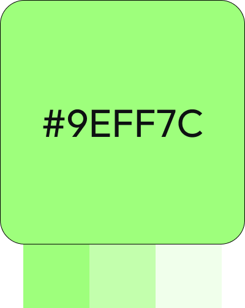
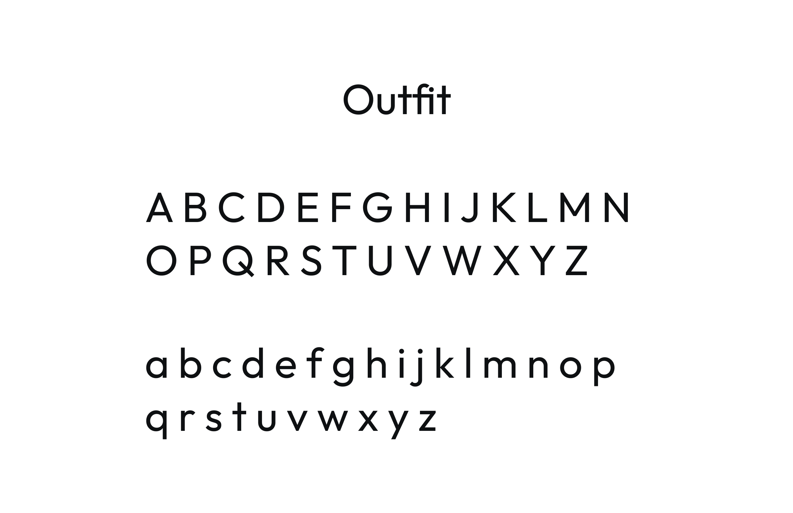
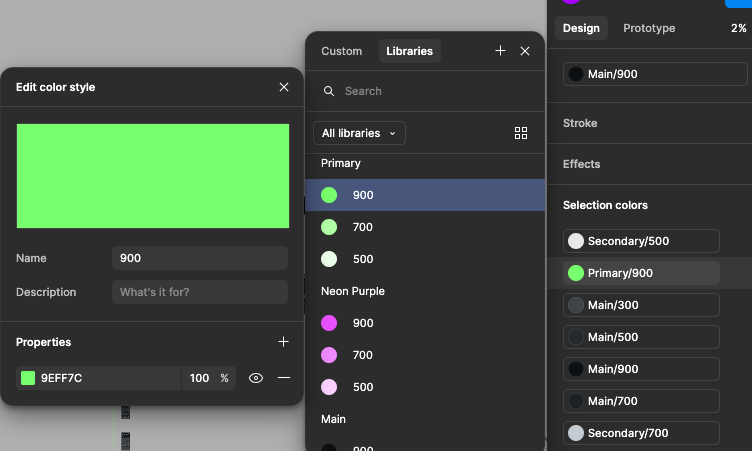
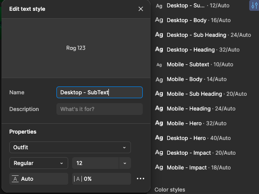
- project goals -
- To provide an e-learning platform that goes beyond theory and prepares students for real-world jobs.
- To increase user engagement by offering hands-on projects.
- To improve the employability of students by bridging the gap between education and
employment.
- research -
- Personas: Developed personas focusing on students, recent graduates, and professionals looking to
upskill.
- Target Audience: Individuals seeking to gain practical experience and make themselves more
marketable in the job industry.
- Analysis: Surveys and user interviews revealed a strong demand for practical experience and
real-world applications in e-learning platforms.
- future development -
We are currently researching new features to enhance Wrkble's offerings. Our goal is to connect with
recruiters and companies to send them resumes of our top students. Upon completion of certain skills, we
provide a complementary resume builder and add the student's name and resume to our database. This allows
companies to reach out to highly skilled students directly. These features are in the research phase, but
they represent our commitment to bridging the gap between education and employment.
- brainstorm and ideation -
- Possible Solutions: Explored various ways to integrate real-world projects, including
collaborations with companies and open-source communities.
- Chosen Solution: Opted to host projects on GitHub, where students could work on real issues and
showcase their work to potential employers.
- sketches and wireframes -
Created initial sketches focusing on user flow, navigation, and key interaction points. These were translated
into wireframes, emphasizing ease of use and intuitive design.

- iterations -
Iterated on the platform's design based on user feedback, focusing on improving navigation, enhancing user
engagement, and ensuring the platform was accessible and intuitive.
- components -
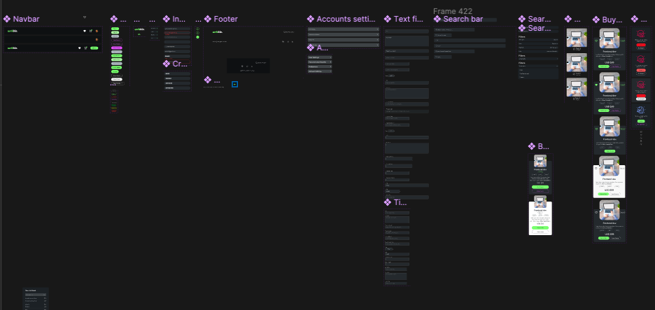
- svg animations -
Created interactive SVG animations for cart and wishlist and the interactions helped people enjoy the
purchasing (and wishlisting) process with gamification effect, try clicking the icons below:
- prototype -
Created a fully interactive prototype in Figma, showcasing the user journey from course selection to project
submission. This prototype was used for stakeholder presentations and usability testing.
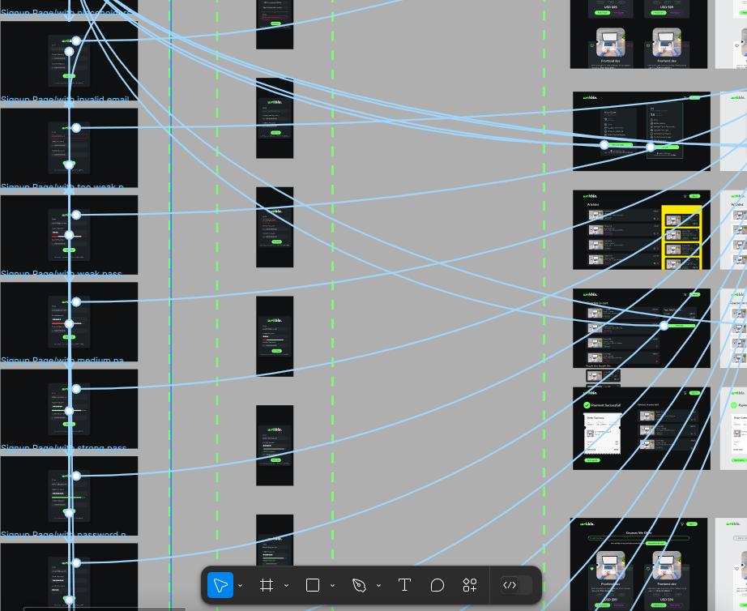
- usability report -
Conducted usability tests with real users to identify critical issues and areas for improvement. The tests
were conducted in person, without screen captures, focusing on user behavior and interaction with the
platform.

Usability Report that led to a Redesign
- redesign -


- case study: usability improvements boost course sales by 500% for wrkble -
Background
Wrkble underwent a significant redesign to enhance its usability and user experience. The usability study
conducted involved observing user interactions with the platform to identify critical issues and areas
for improvement.
Usability Study Overview
Mode of Conduct: Physical presence, no screen captures, HCI principles
Key Findings
- Breadcrumb Navigation: Users found breadcrumbs effective for navigation, aligning with common web
usage patterns seen on sites like Amazon. This supports Jacob's Law that users prefer familiar
interface designs.
-
Clickable Elements: Users initially missed clickable elements such as the cart button due to its
lack of visual distinction. Enhancements like subtle animations were recommended.
- Emotional Contagion: Users desired a more human-centric design on the landing page to foster empathy
and connection.
- Contrast and Accessibility: Tags had a high contrast ratio of 8.1, making non-clickable elements
visually prominent. Adjusting the contrast ratio to 4.5 was suggested for better usability.
- Search Functionality: Users comfortably utilized the search bar, although minor issues were noted on
iOS devices, highlighting the need for further testing on different platforms.
Recommendations and Changes
- Redesign of the Single Course Page: Simplified layout with breadcrumbs placed at the top for
intuitive navigation.
- Redesign of Instructor card: Instructors' cards made visually and functionally interactive to align
with user expectations.
- Clickable Wishlist and Cart Items: Entire components made clickable to enhance user interaction.
-
Improved Iconography: Redesigned icons for better clarity and user understanding.
- Action Prompts for Tags: Added prompts when difficulty tags are clicked to guide user actions.
Outcome
The usability improvements resulted in a dramatic 500% increase in course sales. The redesign made Wrkble
more intuitive, accessible, and user-friendly, directly contributing to higher user engagement and
satisfaction.
- normalcy bias -
Normalcy bias refers to how people expect things to work based on their past experiences, which may not
always align with reality. For example, users might expect their camera's flash to activate automatically at
night, not considering that a low battery could prevent this. We observed normalcy bias in Wrkble and
addressed it by implementing an offline and online event listener. This feature checks if the user or admin
is offline, ensuring that important course edits and submissions are not missed. We added a spinning offline
animation to indicate the system is trying to reconnect and a 1-second check symbol to show the user is back
online. This approach helps manage user expectations and maintain a seamless experience.
Try Going offline and see what happens!
- new design -
The final design focused on clarity, engagement, and practicality. It included features like breadcrumb
navigation, clickable elements, and a more human-centric design on the landing page to foster empathy and
connection.

Wrkble ↗
- conclusion -
- Challenges: Addressing normalcy bias in users who expected certain functionalities to work in
specific ways, improving accessibility, and making the platform more intuitive.
- Learnings: Identified the importance of user-centric design and the need for continuous iteration
based on user feedback.
- Outcomes: Usability improvements resulted in a 500% increase in course sales, demonstrating the
effectiveness of the redesign.
- scope of improvements -
Future developments include integrating a resume builder and a recruiter connection feature. These are in the
research phase and aim to further bridge the gap between education and employment.
- what could have been better -
The initial launch could have included more comprehensive user testing across different devices, particularly
iOS, to catch platform-specific issues earlier in the process.
- final feedback and suggestions -
The usability report provided actionable insights, such as the need for better iconography and more intuitive
navigation. These improvements were implemented in the final design, resulting in a more user-friendly
platform.


 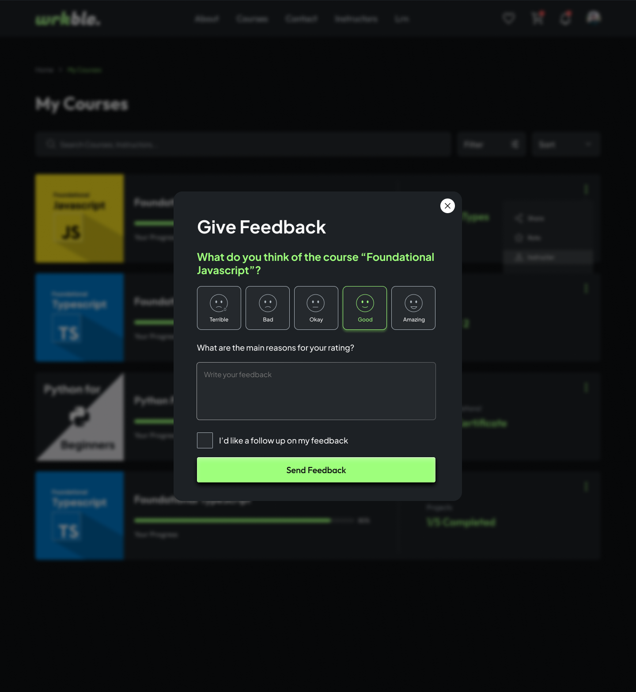
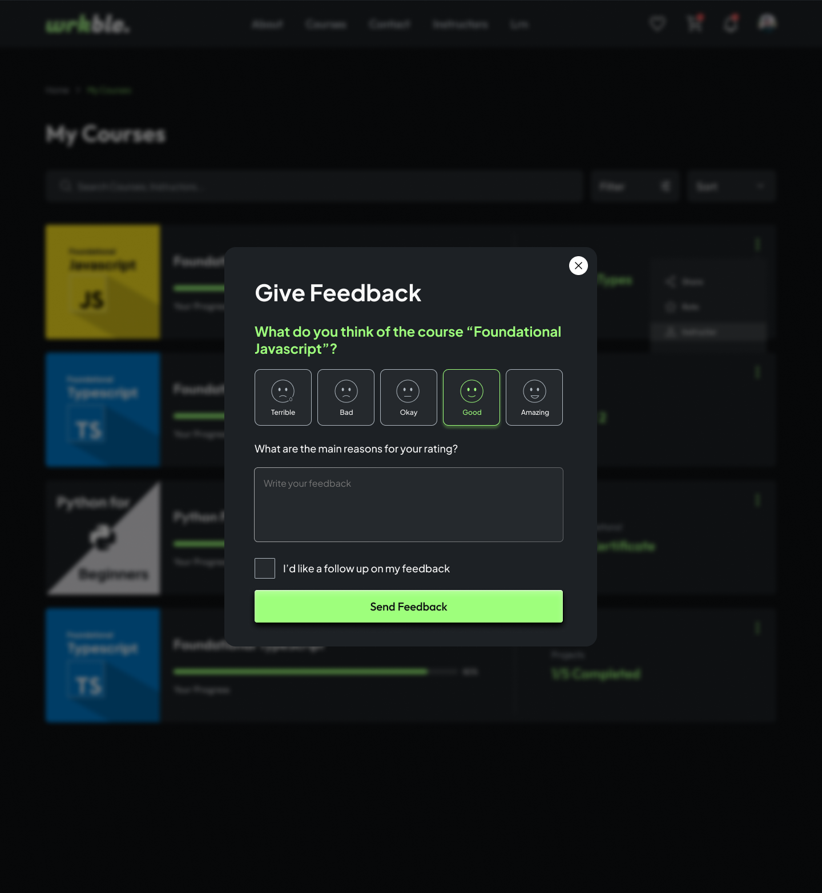

 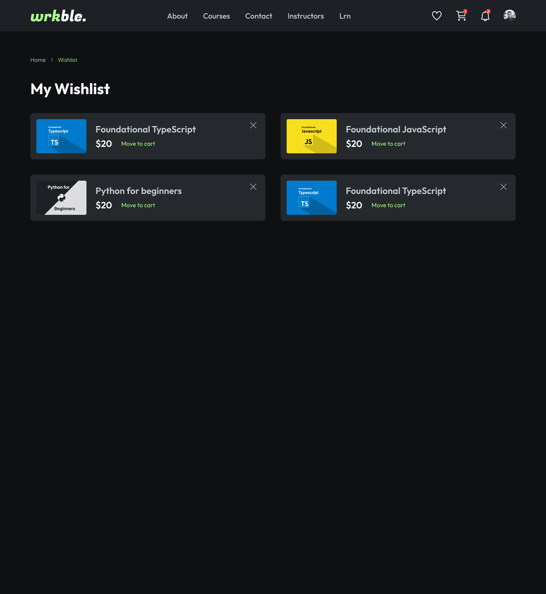
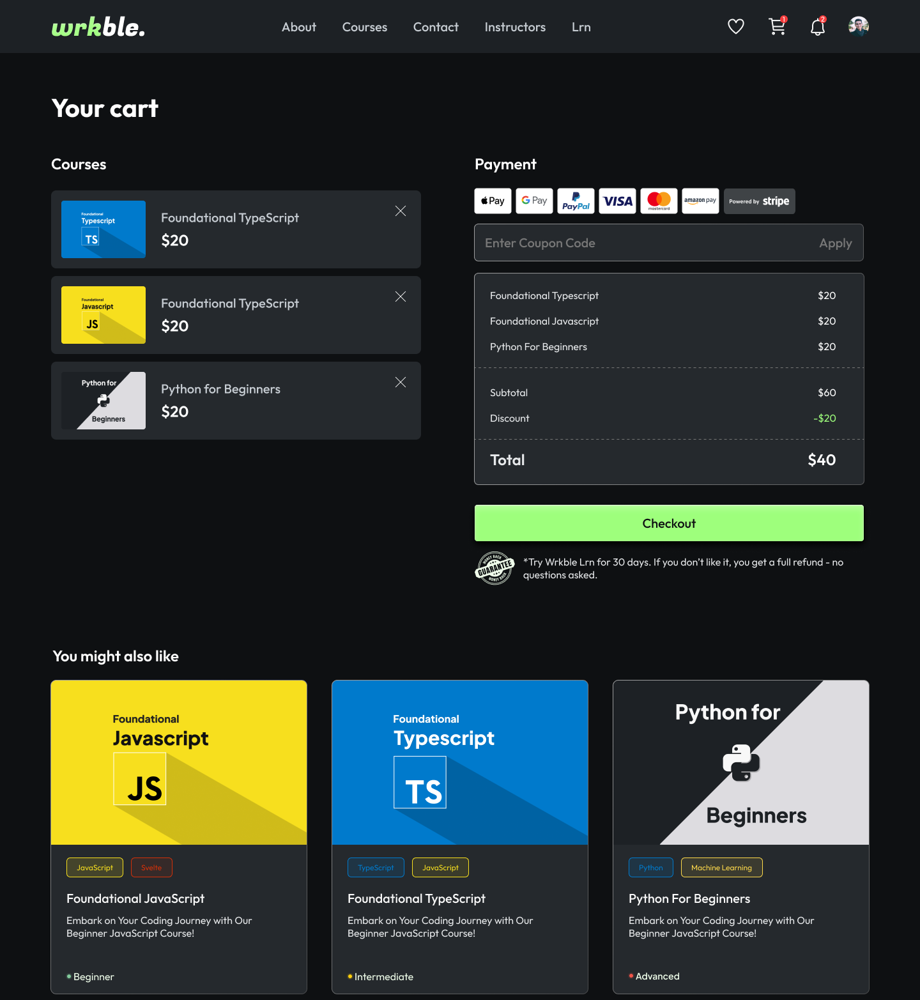
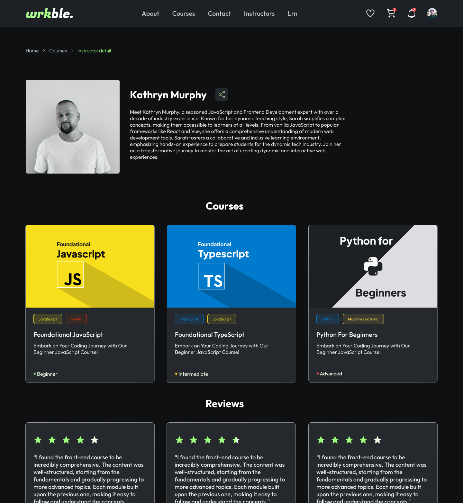
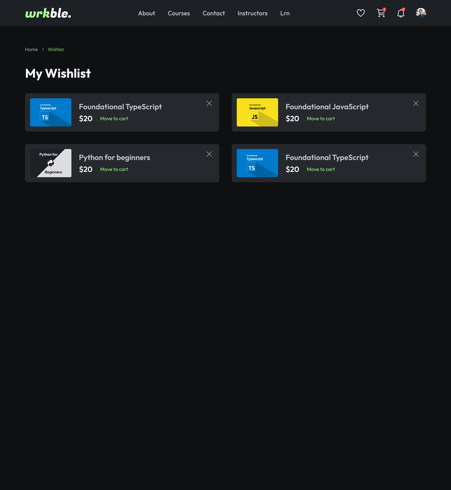
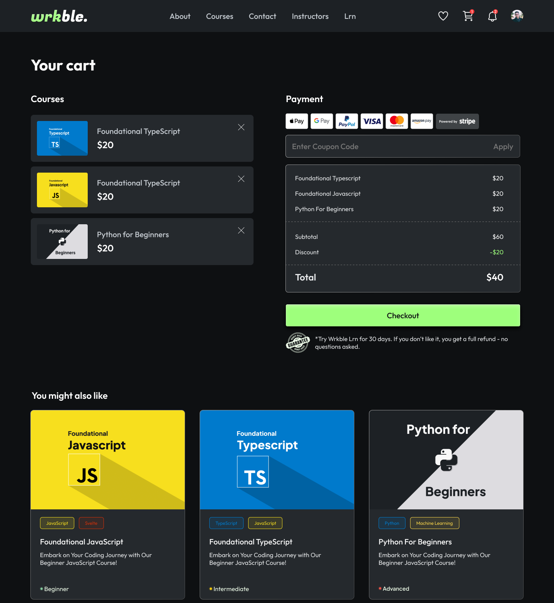
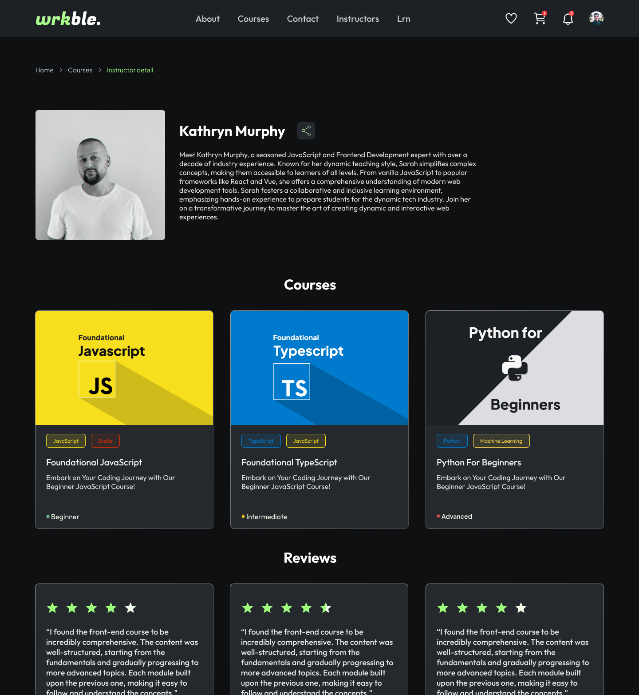